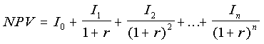
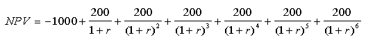
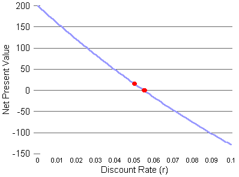
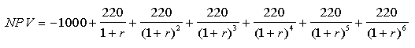
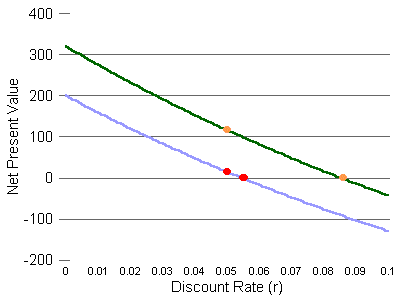
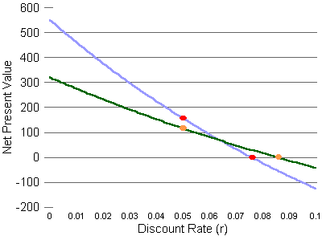
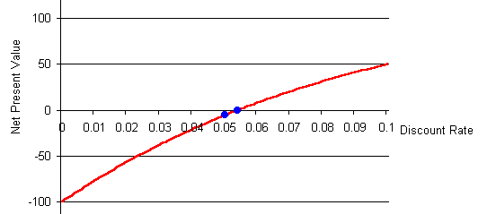
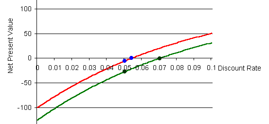
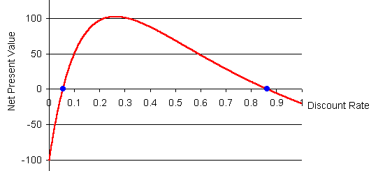

The two most-used measures for evaluating an investment are the net present value and the internal rate of return. (Two earlier tutorials discussed these concepts. See the tutorials list for links to tutorials for discounting future income and the internal rate of return.)
It is often assumed that higher is better for both of the net present value and the internal rate of return. In particular, it is usually stated that investments with higher internal rates of return are more profitable than investments with lower internal rates of return.
However, this is not necessarily so. In some situations, an investment with a lower internal rate of return may be better, even judged on narrow financial grounds, than an investment with a higher internal rate of return. This interactive lecture explores why and when this reversal takes place.
To review, both the net present value and the internal rate of return require the idea of an income stream, so let's start there. An income stream is a series of amounts of money. Each amount of money comes in or goes out at some specific time, either now or in the future. The income stream represents the investment; the income stream is all you need to know for financial evaluation purposes.
In real life, individuals, charitable institutions, and even for-profit businesses have social or other goals when selecting investments. For businesses, the benefits of community good will are no less real for being difficult to measure precisely. For enterprises with social as well as financial goals, the measures discussed here are still useful: They tell you how much it costs you to advance your social goals.Here is an income stream example, from the interactive lecture about the internal rate of return.
| Year | 0 | 1 | 2 | 3 | 4 | 5 | 6 |
| Income amounts | -$1000 | $200 | $200 | $200 | $200 | $200 | $200 |
In the future, at years 1 through 6, there will be net income of $200 each year.
All of the amounts in the income stream are net income, meaning that each is income minus outgo, or revenue minus cost. In year 0, the cost exceeds the revenue by $1000. In years 1 though 6, the revenue will exceed the cost by $200.
This investment evidently has no salvage value. That is, there is nothing that can be sold in year 6, the last year. If there were, the amount that could be realized from the sale would be added to the income amount for year 6.
For simplicity, all my examples have the incomes and outgoes at one-year intervals. Real-life investments can have income and expenses at irregular times, but the principles of evaluation are the same.
Now let's discuss our two measures in connection with this income stream:
The word "net" in "net present value" indicates that our calculationThe net present value of an investment tells you how this investment compares either with your alternative investment or with borrowing, whichever applies to you. A positive net present value means this investment is better. A negative net present value means your alternative investment, or not borrowing, is better.
includes the initial costs as well as the subsequent profits. It also reminds
us that all the amounts in the income stream are net profits, revenues
minus cost. In other words, "net" means the same as "total" here.
Consider again this income stream:
| Year | 0 | 1 | 2 | 3 | 4 | 5 | 6 |
| Income amounts | -$1000 | $200 | $200 | $200 | $200 | $200 | $200 |
Present Value of any one income amount = (Income amount) / ( (1 + Discount Rate) to the a power)
a is the number of years into the future that the income amount will be received (or spent, if the income amount is negative).
The net present value (NPV) of a whole income stream is the sum of these present values of the individual amounts in the income stream. If we still assume that income comes or goes in annual bursts and that the discount rate will be constant in the future, then the NPV has this formula:

Three properties of the net present value of an income stream are:
1. Higher income amounts make the net present value higher. Lower income amounts make the net present value lower.Try it yourself. Click on a box in the Income row. Edit the number there, deleting or adding some digits. Then press Enter.
2. If profits come sooner, the net present value is higher. If profits come later, the net present value is lower.Try it yourself. This applet lets you move the income amounts to later or earlier. You can see how that changes the net present value of the income stream.
3. Changing the discount rate changes the net present value. For an investment with the common pattern of having costs early and profits later, a higher discount rate makes the net present value smaller.Try it yourself. Click on the discount rate box and change the number there. Then press Enter.
Similarly, if you lower any of the income amounts in years 1 through 6, then a lower discount rate will be needed to bring the net present value back up to 0. That would seem to imply that projects with lower incomes have lower internal rates of return.
These seeming implications are actually often true, if the projects being compared have about the same shape, with the costs coming early and the benefits coming late, and if the projects being compared switch from net outgo to net income at about the same time. Otherwise, though, the implications might not be true.
Before we go on to that, a little review:
Which of these measures (net present value and internal rate of return)
requires you to know the future income and outgo amounts?
Which of the measures requires you to know what the discount rate will
be in the future?
Please do not scroll down past this area until you have answered the question.
The text resumes here: |
The internal rate of return does not require you to predict future discount rates. That would seem to make the internal rate of return the more useful (or less uncertain) measure. Sometimes, though, the internal rate of return can fool you.
The article is: Weeks, W.B., Wallace, A.E., Wallace, M.M., Welch, H.G., "A Comparison of the Educational Costs and Incomes of Physicians and Other Professionals," N Engl J Med, May 5, 1994, 330(18), pp. 1280-1286.The idea was to see if doctors were overpaid, by considering primary and specialty medical education as investments and comparing them with investing in education in business, law, and dentistry (but not university professors -- that would have been too embarassing). Adjustments were made for differences in average working hours. The authors found that primary medicine was the poorest investment of all of these. Specialty medicine did better, but was not out of line with the other professions.
In the results was this oddity: By the criterion of the net present value of lifetime educational costs and income benefits, specialist physicians tied for highest with attorneys. Both were ahead of business school graduates. However, by the criterion of the internal rate of return, specialty physicians, with a 21% average return, were well behind the attorneys' 25% average return, while the business school graduates' 29% average return was the highest of all. The present value and the internal rate of return ranked the alternatives differently!
By the way, since this article's 1994 publication, managed care has forced specialty physician incomes down by perhaps one-third. This has sharply lowered the investment value of a specialty medical education.
The NPV curve, the relationship between the discount rate and the net present
value has a formula that can be written like this:
This, of course, is the formula we saw already for the net present value,
for annualized costs and revenues and a constant discount rate. Each
I is an income amount for a specific year. The subscripts
(which are also the exponents in the denominators) are the year numbers,
starting with 0, which is this year. The constant discount rate is
r. The number of years the investment lasts is n. In Weeks's
study of professionals' incomes, n was about 44, because costs and
incomes were calculated from age 21 to age 65.
We'll use an example with an n of 6, so the formula fits on your
screen:

This is our machine investment example that we have been using all along.
The NPV is a function of r. Graphed, it looks like this:

The blue curve shows the net present value for discount rates (r) from
0 to 0.1 (0% to 10%). The red dots are the two points we get from our
measures. The left red dot shows the net present value at the discount
rate of 0.05 (5%). The right red dot shows the internal rate of return,
because it is where the curve crosses the horizontal line indicating an NPV of 0.
That right red dot is between the 0.05 and 0.06 marks on the r axis, so the internal rate of return is between 0.05 and 0.06. (The
actual internal rate of return is about 0.0547, as we saw earlier.)
Imagine we have another possible investment, which has this NPV equation:

This investment is like the first, except that the net profit in years 1
through 6 is $220 per year, rather than $200. I would say that this
investment has a similar "shape" to the first, because the costs and profits
come at the same times. Also, the size of the initial outlay is the
same for both. The only difference is the amount of profit. Here's
a graph with both investments on it:

The green curve is the second investment. It is above and parallel to
the first investment's blue curve. The left orange dot shows the net
present value of the second investment at the discount rate of 0.05.
The net present value there is a little over $100. This is higher than
the left red dot, so the net present value at r=5% of the green-line
investment is higher than the net present value at r=5% for the blue-line
investment.
The right orange dot shows where the second investment's curve crosses the NPV=0 line. This is well to the right of the first investment's internal rate of return dot. The internal rate of return for the second investment is much higher (further to the right).
In this example, our two measures, the net present value at r=0.05 and the internal rate of return, tell us the same thing. They both say the second investment is better. A look at the graph above confirms that the second investment is better at all discount rates, so it is fair to say that the second investment is unequivocably better than the first.
Sometimes, though, the alternative investments are mutually exclusive. For example, there may be two ways to build a dam across a particular river. You can do one or the other, but not both. There may be several alternative ways to address a workplace safety problem. There is no point to doing more than one if any one way solves the problem. Deciding on a professional education involves somewhat mutually exclusive choices. A few people do go to medical school and then law school, but the additional return from the second degree is not the same as what someone going to law school fresh out of college would expect.
If you can only do one investment, you should choose the one with the highest net present value at the discount rate appropriate to you. A problem with that advice, though, is that discount rates can change with general economic conditions. You are therefore more confident about choosing one investment over another if your chosen investment has a higher net present value over a broad range of possible discount rates. In our example so far, the green-line investment has a higher net present value at all discount rates, so we would choose it with confidence. Regardless of what happens in the future to discount rates, we'll be better off with the green-line investment than with the blue-line investment.
To create an example, I'll change the blue line investment so that its profits come much later. This increases the effect of the discount rate on the net present value. Below are the two income streams, now. Also shown are their net present values at a 5% discount rate and their internal rates of return.
| Year | 0 | 1 | 2 | 3 | 4 | 5 | 6 | NPV at 0.05 discount rate | Internal rate of return |
| Green line investment | -$1000 | $220 | $220 | $220 | $220 | $220 | $220 | $117 | 0.086 |
| Blue line investment (modified) |
-$1000 | $0 | $0 | $0 | $0 | $0 | $1550 | $157 | 0.076 |

The graph shows what's going on, by showing the Net Present Value curves for
both investments for discount rates between 0% and 10%. The curves cross
at a discount rate of about 0.064, or 6.4%.
Now, to choose which investment we want to do, assuming we cannot do both, we have to make a guess about what future discount rates will be. If we expect discount rates to be less than 6.4%, where the curves cross, we choose the blue line investment. For discount rates above 6.4%, but below 8.56% (the internal rate of return of the green line investment -- the discount rate at which the net present value of the green line investment is $0), we choose the green line investment. At higher discount rates than 8.56%, we don't do either, because the net present values are below $0 for both investments.
Costs can come later than profits if an investment creates environmental problems that will have to watched or cleaned up later. Nuclear power plants are a good example. After about 40 years of service (sometimes less than that), they become too contaminated with radiation to continue in service. They must then be closed and either guarded where they are for thousands of years or dismantled and moved to a disposal site.
Consider this income stream:
| Year | 0 | 1 | 2 | 3 | 4 | 5 | 6 |
| Income amounts | -$200 | $200 | $200 | $200 | $200 | $200 | -$900 |
I've reduced the initial cost, but added a big cost at the end. Let's see what a difference this makes in how the NPV changes when the discount rate changes. In the applet below, the starting discount rate 5%. The net present value (NPV) is -$6. That's negative six dollars, so if your discount rate really were 5%, you would not want to do this investment.
Try changing the discount rate, by clicking in the discount rate box and
changing the 0.05 to something else. Try 0.04 or 0.03. In the examples above,
the NPV goes up when the discount rate is lowered. Is that true for this project?
Then try 0.06 or 0.07. What happens to the NPV?
(Keep the discount rates reasonably small,
like between 0.00, which is 0%, and 0.3, which is 30%.)
The relationship between the discount rate and the NPV is the reverse of what we see with "normal" investments! With this kind of income stream, higher discount rates make the net present value bigger, and lower discount rates make the net present value smaller.
Before leaving the applet above, see if you can find the internal rate of return, the discount rate that makes the net present value equal to $0.
Here is the NPV graph:

The left blue dot shows the net present value at a 5% (0.05) discount rate.
It is at -$6 on the net present value scale.
The right blue dot is where the curve crosses the discount rate axis, which
is where the net present value is $0. The discount rate here, 0.054
(5.4%), is the internal rate of return.
Or, at least, it fits the standard definition of internal rate of return. However, unlike the usual situation, this project is profitable at interest rates above this IRR and unprofitable at interest rates below this IRR.
Suppose we have an alternative project which also has this shape, with
a big cost at the end, but slightly lower profits in the intermediate years.
I'll call the new alternative the "green line investment."
| Year | 0 | 1 | 2 | 3 | 4 | 5 | 6 | NPV at 0.05 discount rate | Internal rate of return |
| Red line investment | -$200 | $200 | $200 | $200 | $200 | $200 | -$900 | -$6 | 0.054 |
| Green line investment | -$200 | $195 | $195 | $195 | $195 | $195 | -$900 | -$27 | 0.070 |
The green line investment has a lower NPV than the red line investment
at all discount rates, because it has lower profits in years 1 through 5,
and the same costs in years 0 and 6. In particular, as the table above
indicates, it has a lower NPV at the 0.05 discount rate. The graph below
shows the NPV curves for both investments, with the green line lying below
the red line at all discount rates.

The green line investment is clearly inferior, but it has the higher internal
rate of return. The green line investment's IRR is 0.07. The
red line investment's is 0.054.
Thus, for projects with big late costs, the better projects will have lower internal rates of return, the opposite of the rule for normal projects that have their costs early and their positive returns later.
Now let's discover something even more strange. Here's another applet that lets you change the discount rate and see the effect on the red line investment's value. This one, though, allows you to take the discount rate over 0.3 (30%) and all the way up to 1.0 (100%). Those rates are much higher than, hopefully, we will ever see in the U.S., but they are theoretically possible, and they show a strange phenomenon.
Try raising the discount rate to 0.3, and notice what happens to the net
present value. Then, raise the discount rate some more above that.
In which direction does the NPV move now?
See if you can find the second IRR, where the NPV is zero again!
Please do not scroll down past this area until you have answered the question.
The text resumes here: |
Here's the NPV curve for the red line investment for discount rates from
0% to 100%.

At discount rates below 0.054, the NPV is negative, and this investment is
worse than doing nothing.
At a discount rate of 0.054, the NPV is 0. The first IRR for this investment
is 0.054.
If the discount rate rises above 0.054, the NPV turns positive, and this
investment switches to being profitable.
At a discount rate of 0.262 (26.2%), the NPV for this investment reaches its
maximum. If the discount rate rises further than that, the NPV falls.
The NPV reaches 0 again at a discount rate of 0.86. This is the second IRR
for this investment.
If the discount rate were rises even more, above 0.86, the NPV turns negative
again. This investment reswitches to being unprofitable.
My use of the terms "switch" and "reswitch" refers to the reswitching controversy of the 1960's. This was between economists in Cambridge, England, and Cambridge, Massachusetts, over whether capital markets can be analyzed just like other commodity markets. The English economists, led by Joan Robinson, argued that capital markets were special because of the possibility of reswitching, which raises basic questions about the standard view that the return to owning capital is a society's reward for abstaining from consumption.The oldest discussion of this tutorial's issues that I have found in the economics literature is Lorie JH, Savage LJ, "Three Problems in Capital Rationing," Journal of Business, Vol. 28, October 1955.Some economists would say that only the second of our IRR's is the true IRR, by defining the IRR as the place where the NPV is 0 and where the NPV is falling. The problems with that are: (1) this distinction is usually lost in practice, and (2) by making the pattern of costs and profits more complex, I can make up an investment that has multiple discount rates where the NPV is 0 and the NPV is declining.